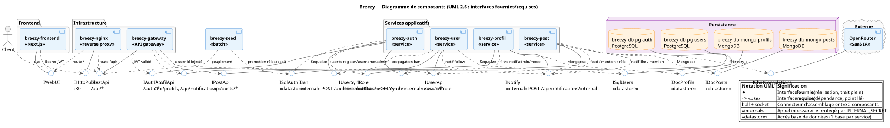
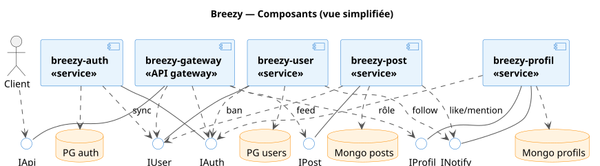

Diagramme de composants UML
Cette page présente l'architecture de Breezy sous forme de diagramme de
composants UML, généré à partir du code réel des services. Chaque relation
représentée est prouvée par une référence fichier:ligne
(voir le rapport diagrams/ANALYSE_DEPENDANCES.md à la racine du dépôt).
Les noms des composants correspondent exactement aux noms des containers
définis dans breezy-infra/docker-compose.yml.
Vue complète
Diagramme de composants en notation UML 2.5 : chaque composant expose ses
interfaces fournies (sucette / ball ──○) et consomme les interfaces des
autres via des dépendances «use» (douille / socket, trait pointillé). La
jonction d'une interface fournie et d'une interface requise sur un même contrat
forme un connecteur d'assemblage.

Source PlantUML :
diagrams/composants.puml— rendu vectoriel reproductible viajava -jar plantuml.jar -tsvg composants.puml.
Vue simplifiée (soutenance)

Légende (notation UML)
| Élément | Signification |
|---|---|
──○ interface fournie (ball / lollipop) |
Contrat exposé par le composant (réalisation, trait plein) |
··> «use» vers une interface (socket) |
Contrat requis par le composant (dépendance, trait pointillé) |
| ball + socket sur la même interface | Connecteur d'assemblage entre fournisseur et consommateur |
| «service» / «API gateway» / «reverse proxy» | Stéréotypes des composants |
| «internal» | Interface inter-service protégée par INTERNAL_SECRET (hors gateway) |
| «datastore» | Accès à une base de données (une base par service) |
Interfaces du diagramme — IApi (/api du gateway), IAuthApi, IUserApi,
IPostApi, IProfilApi (façades publiques des services), IUserSync, IBan,
IRole, INotify (interfaces internes «internal»), ISqlAuth / ISqlUsers /
IDocPosts / IDocProfils (interfaces «datastore»), IChatCompletions
(OpenRouter, externe).
Relations inter-services
Toutes ces relations sont des appels HTTP non bloquants
(try/catch + timeout) : une cible indisponible n'échoue jamais la requête
utilisateur principale.
| Source | Destination | Type | Description | Réf. code |
|---|---|---|---|---|
| auth-service | user-service | Synchrone HTTP | POST /users/sync — réplique le profil après register / changement de username / création admin |
auth.controller.js:38, 247, 299 |
| user-service | auth-service | Synchrone HTTP | POST /auth/internal/ban — propagation du bannissement vers la source de vérité |
user.controller.js:229 |
| user-service | profil-service | Synchrone HTTP | POST /api/notifications/internal — notification de follow |
user.controller.js:106 |
| post-service | user-service | Synchrone HTTP | GET /users/:id/following (feed), GET /users/:id (rôle au like), GET /users/by-username/:u (mention) |
post.controller.js:163, 77 · like.controller.js:27 |
| post-service | profil-service | Synchrone HTTP | POST /api/notifications/internal — notifications de like et de mention |
like.controller.js:34 · post.controller.js:84 |
| profil-service | auth-service | Synchrone HTTP | GET /auth/internal/users/:id/role — vérifie le rôle du destinataire avant de créer la notif |
notification.controller.js:75 |
| post-service | OpenRouter | Synchrone HTTP (externe) | POST /api/v1/chat/completions — réponse IA @breezy_ai |
post.controller.js:12 |
Interfaces internes vs externes
Interfaces publiques (accessibles via le gateway, JWT requis)
Le frontend ne parle qu'au gateway (/api/*, src/services/api.js:6). Le
gateway valide le JWT une seule fois (gateway/src/middleware/auth.js) puis
injecte x-user-id / x-user-role / x-user-username vers les services.
- auth :
/api/auth/register,/login,/refresh,/logout,/me,/change-password,/username,/admin/create-user - user :
/api/users/:id,/search,/:id/follow,/:id/followers,/:id/following,/:id/ban,/by-username/:username - post :
/api/posts(CRUD),/feed,/search,/:id/like,/:id/repost,/:id/comments,/user/:userId/*,/api/upload - profil :
/api/profils/:userId,/api/notifications,/api/notifications/read-all,/api/notifications/:id/read
Interfaces internes (protégées par INTERNAL_SECRET, hors gateway)
Appelées uniquement de service à service via l'en-tête x-internal-secret ;
elles ne sont pas exposées par le gateway.
| Interface | Service | Appelée par |
|---|---|---|
POST /users/sync |
user-service | auth-service |
POST /auth/internal/ban |
auth-service | user-service |
GET /auth/internal/users/:id/role |
auth-service | profil-service |
POST /api/notifications/internal |
profil-service | user-service, post-service |
Diagramme généré par analyse du code source (6 services analysés en parallèle).
Voir diagrams/ANALYSE_DEPENDANCES.md pour la matrice de dépendances, l'analyse
de couplage, les SPOF et les recommandations.